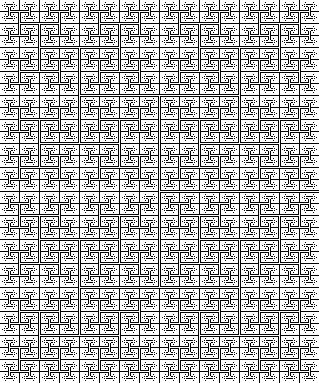

Team Radical Too's ICFP 2002 Programming Contest Entry
Team Radical Too consists of Daniel Adkins, Josef Rokicki, and Tomas
Rokicki (rokicki -at- cs.stanford.edu).
How did your bot do? Check out the set of
animations
I built from the judge's game logs!
We used raw C. Really painful, but we got the job done.
See my bot play itself! (117K; requires IE5+
or a Gecko-based browser like Mozilla.
If it does or does not work for you, let me know at
rokicki -at- cs.stanford.edu. Thanks!) You can animate your own
games; this perl script along with
this JavaScript file will read the output of
the Judge's simulator and turn it into an animation for you
automatically! The perl script will also
read the RAVT adump format. Check it out!
Our submission
is available here (185k).
I just ran strip
over the executable; no other change. If you beat up
on it with your robot please let us know. If you try it out, remember
that the -m option sets the speed, so -m 10 means 10 moves a second.
This option must occur before the hostname and portnumber arguments.
If you don't give it this option, it *will* use the full second per move
(by design).

The main interesting features of our robot include:
- Quick distance finding. We find the full set of distances from our
bot to all squares on the board, and from the current destination to all
squares on the board, using a straightforward breadth-first-search that
runs very fast.
- Distance caching. To aid planning, we maintain a list of up to
1000 "interesting points". For each of these points we maintain a
distance cache to the other interesting points. To keep things
tractable on a complex 1000x1000 board, we explore the neighborhood
of these points over time, increasing the distance as we find we
have more time to explore.
- Move planning. At any given point, we attempt to calculate what
squares are most interesting to us, and visit those. We try to plan
a route that takes us by several interesting squares. We balance
exploring, picking up, and delivering packages by specifying that
knowledge of a packet is worth 20% of its points, holding a package
is worth 30% of its points, and delivering a package is worth 50% of
its points. We consider the comparative value of a route to be the
total value divided by the total distance. We pick routes by choosing the
current route with the highest comparative value, and try extending it
to all the existing interesting points.
- Package picking. We attempt to pick up packets for delivery that
are the closest to us, and we also attempt to find packets in
clusters for delivery.
- Close-game tactics. If another robot is close to us (within two
squares), we evaluate all possible bidding orders and movements of
the robots nearby (for up to 5 robots total). We use this information
to calculate a probability of various events happening (like our
death, or killing another bot, or making progress towards our goal)
and, based on this information, choose a direction and bid. This
tactical decision can override the strategic decision made by the
move planner.
- Bidding. If bidding high will increase our chances of success,
according to the tatical finder, we will bid high. Unfortunately we
were way too conservative in what our definition of high was, and
thus we find ourselves dying much too easily. One intended component
of our bidding was to bid based on the probable length of the game.
In order to help drive the probable length of the game, we made sure
our program used pretty close to one second per move---even though
there is absolutely no need to use up so much time. If this is
annoying, feel free to use the -m option to set the number of moves
per second (for instance, -m 20 means at least 20 moves a second).
One thing we are especially proud of is how our bot handles large,
complex boards (such as this one (218k)) with
aplomb. Try your robot on this one!
Our methodology? We used CVS on a remote server, and AIM for all
communication (we did not see each other face to face even once during
the contest despite the fact that we all live in the Bay area).
Initially, Joe built test cases, including a Perl script
to generate huge maps; Tom wrote a server for debugging and
infrastructure, and Dan built the client infrastructure. Then, we
wrote a completely oblivious robot that just tried to pick up and
then deliver packages, with no strategy or tactics. Finally, over the
course of the final two days, we hacked in all the strategy and
tactics you see listed above. At almost every point during development,
our robot was playing tons of very large games on very large boards
in the background.
What's that big picture up there? It's an example of a map with a lot
of points equidistant from any given point. As a matter of fact, it's
possible to construct a map like the above that's smaller than 1000x1000
that has more than 128,000 points the same distance away from a given
point.